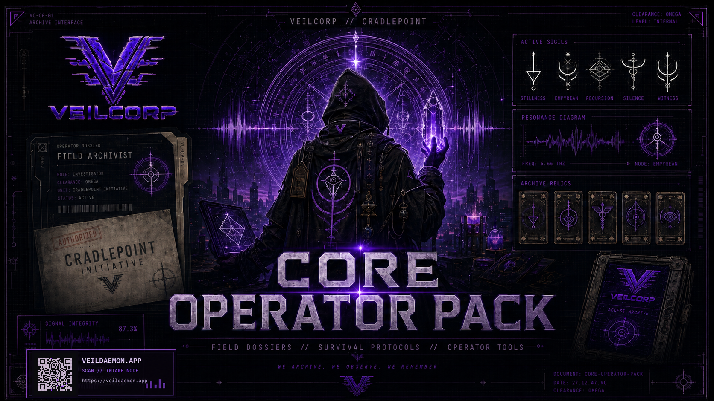

Direct independent
Digital and print-on-demand preserve control, rights, customer learning, and incremental release speed.
Publishing
Professional publishing converts an existing rules system, content library, and release pipeline into a clearer flagship product.

Digital and print-on-demand preserve control, rights, customer learning, and incremental release speed.
A campaign can fund editing, layout, art, proofs, manufacturing, fulfillment preparation, and a defined launch cohort.
A partner may exchange margin and some control for production, distribution, retail reach, marketing, or an advance.
Tabletop core products, recurring Needlepoints, and crowdfunding/print are the first repeatable engine. Premium VeilDaemon content and events follow. Mobile AR is upside after audience and IP pipeline exist.
The TTRPG is an audience-acquisition, trust-building, and IP-validation engine—not a shelf of isolated PDFs.
Free Needlepoint → Operator or Handler Pack → Core and campaign material → VeilDaemon account → continuing experiences.
Current direct sales, professional digital release, crowdfunded print, and publisher-supported expansion remain separate scenarios. Quotes, rights, conversion evidence, fulfillment, and contribution margin determine the route.